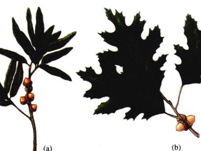
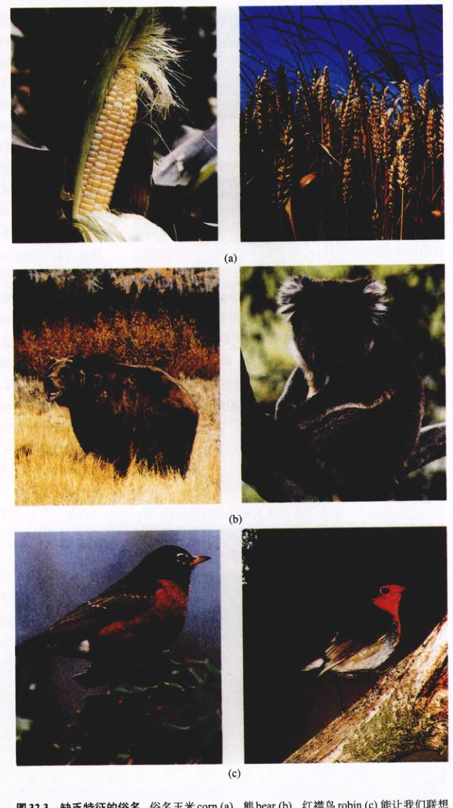
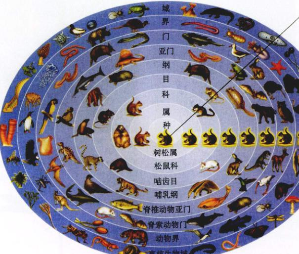
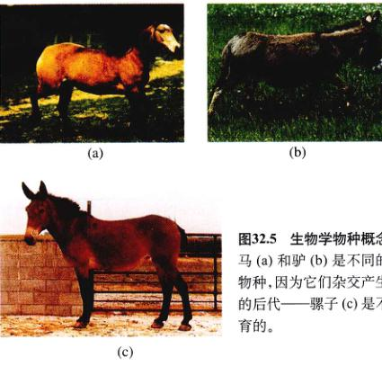
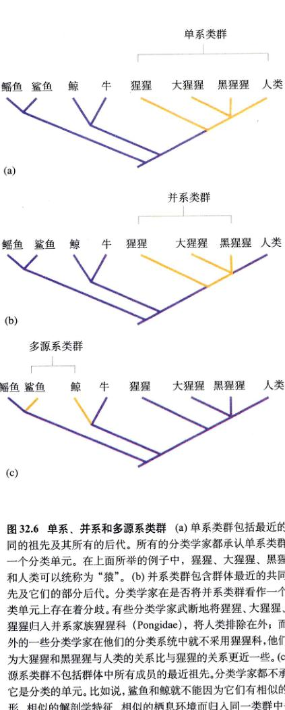
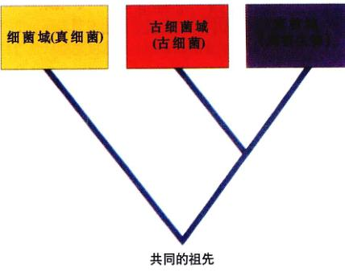
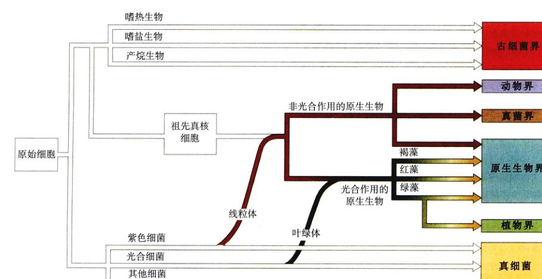
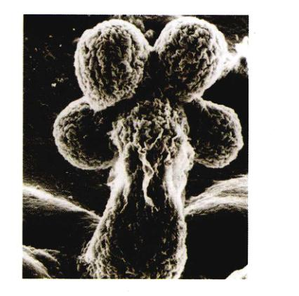

大家可能没有意识到，我们目前正陷入一场灾难中，那就是丙型肝炎（Hepatitis C），一种致命性的肝脏疾病正悄悄地向我们袭来。大约有400万美国人感染了丙型肝炎病毒，但大部分人却不知道。在21世纪初，曾曾经有人预言，美国今后每年死于丙型肝炎的人数将超过死于艾滋病的人数。
肝炎是一类发生在肝脏的炎症性疾病。病毒性肝炎可以分为截然不同的3种类型：第一种类型为流行性肝炎（infectious hepatitis）或甲型肝炎（hepatitis A），通过受感染个体的粪便传播；第二种类型为血清型肝炎（serum hepatitis）或乙型肝炎（hepatitis B），主要通过血液或其他体液传播；第三种类型就是丙型肝炎（hepatitis C），也是通过血液传播。丙型肝炎病毒（HCV）（右上图）发现较晚，直到1990年才被分离得到。
丙型肝炎病毒的电子显微镜照片 5 nm
HCV 很难分离，这是因为 HCV 不能在实验室培养的细胞中生长。而使分离更困难的是，HCV 是一种严格的灵长类病毒，它仅仅感染人类及其近亲，如黑猩猩和绢毛猴。在实验室里要长期饲养这些实验动物，费用是极其昂贵的，每一项研究只能供给有限的实验动物。所以，不能采用传统的分离纯化的方法从感染的细胞中得到这种病毒。经过15年分离纯化的尝试失败，人们才最后通过分子技术成功分离出 HCV。可以说，HCV 是第一个完全通过克隆受感染核酸的方法分离出的病毒。
第一个成功分离出 HCV 的人是加利福尼亚州的 Chiron 生物技术公司的 Michael Houghton 和他的同事。他们用鸟枪法（shotgun）克隆受感染细胞的 DNA，即将细胞的 DNA 打成许多碎段，再分离每个片段，然后筛选每个 HCV 的 DNA 克隆片段。
HCV 的遗传物质是 RNA，所以，工作的第一步是把 HCV 的 RNA 反转录为可以克隆的 DNA。在整个实验过程中，研究人员不需要完完整整无误地获得整个基因组（这可是件棘手、有困难的工作），因为他们不需要复制 HCV 病毒，仅仅是想鉴别它。因此，研究者采取了取巧得多的方法，即一小段一小段地复制携带部分病毒基因的病毒 RNA。
接着，他们将这些 HCV 基因的 DNA 拷贝插入到噬菌体，再让噬菌体感染大肠杆菌（Escherichia coli）。在鸟枪法实验中，研究者将感染了噬菌体的成千上万的细菌细胞分别在固体培养基平板上培养，形成能被检测的单菌落，所有这些菌落就组成一个“克隆文库”。然后筛选文库，获得含有 HCV 病毒的阳性菌落。
要了解这一实验过程，关键是要弄明白细菌细胞是如何被 HCV 的基因感染的。在一个细菌的细胞中，被插入的 HCV 基因片段只是其一部分 DNA，与其他 DNA 并没有什么不同。细菌的细胞机制像读其他的细菌基因一样读这段插入基因，并复制、翻译成相应的病毒蛋白。然后，全部的秘密就是如何检测含有 HCV 病毒蛋白质的细胞。
如何将 HCV 病毒蛋白质从数千种细菌蛋白质中鉴别出来？Houghton 和他的同事们从感染过 HCV 的黑猩猩身上提取血清，然后将提取的血清与每个菌落进行免疫反应，能产生明显沉淀的，就表示含有 HCV 病毒蛋白的细胞。
这种方法非常简单有效，其成功之处在于不需要知道所研究基因的特性。感染了 HCV 病毒的动物，其血清中含有针对多种蛋白质的抗体，包括动物在抗击 HCV 感染过程中遭遇的 HCV 蛋白。所以，进行抗体反应实验时，在一大堆的蛋白质中，能够与血清发生免疫抗体反应的蛋白就是那些 HCV 蛋白。因此，研究者可以把血清当成“探针”来检测细菌细胞是否含有 HCV 蛋白。当然，这些细菌细胞不能含有其他任何动物蛋白，以免出现假阳性反应。
在测试的100万个细菌菌落中，只有1个菌落仅与感染了 HCV 的黑猩猩的血清发生反应，而且与该黑猩猩被 HCV 感染前的血清不发生反应。
以这个菌落为立足点，研究者们就可以从受感染细胞中逐一筛选出 HCV 病毒基因的其余部分，得到整个病毒基因组，从而直接合成一种检测 HCV 病毒的诊断性抗体。
HCV 抗体的检测 (a) 放射性抗体测定三组患者的 HCV 水平。以每分钟测定的数值作为抗体的灵敏度（大于 3549 的样品认为是阳性）。(b) 接受了丙型肝炎患者供血的个体的血液 HCV 抗体水平。
通过上述的诊断试验，专家们发现，丙型肝炎病毒的分布比人们猜想的要普遍得多。更为严重的问题是，丙型肝炎病毒与甲型、乙型肝炎病毒不同，HCV 导致的是慢性病。大部分的病毒引起的病虽然严重，但是很快就能完全痊愈，如甲型肝炎一般只持续几个星期。然而，90% 的丙型肝炎患者却已患病多年，许多人甚至长达几十年。
病人在受感染的这么长时间里，肝脏会受到严重的损坏。免疫系统中一种细胞毒性T淋巴细胞（cytotoxic T cells）能够识别出肝脏细胞表面的 HCV 病毒蛋白，并杀死受感染的肝细胞。一年又一年，死亡的肝细胞不断增加，周围的正常细胞就会反射性地开始分泌胶原蛋白和其他蛋白质来包裹死亡细胞，最终形成蛋白纤维，在肝脏中交织成网状，扰乱肝脏内部的物质运输。这种情形就像往公路上不停地乱扔碎石砖块一样，交通将会随着碎石砖块的堆积变得越来越困难。
如果纤维化持续发展到一定程度，将会导致肝脏运输完全堵塞，形成肝硬化，这是一种能引起致命性肝脏功能衰竭和诱发原发性肝癌的严重情况。大约有 20% 的病人在病毒感染的 20 年内发展成肝硬化。
诊断性抗体试验的发展对检测供应的血液是否遭到污染很重要。人们都知道，大部分丙型肝炎病例是由于输注了污染的血液引起的。为了研究出一种诊断性抗体试验的方法，一个由 Chiron 领导的国际研究小组比较了几个 HCV 克隆的 DNA 拷贝，从中鉴别出了普遍存在于所有克隆中的 DNA 序列。这段 HCV 的 DNA 片段经过改造，并在人过氧化物歧化酶（SOD）多肽基因的帮助下，被整合到酵母基因组中。这种重组的酵母细胞能高水平表达称为 C100-3 的 SOD/HCV 多肽。把 C100-3 涂在检测板的孔中，就能俘获血液样本中的 HCV 抗体，并检测其中的抗体水平。
为了检验抗体试验的特异性和灵敏度，首先对两肝病人的血清进行测试（图 a）。然后研究者们检测了血型相似的供体（包括阳性和阴性）和受者的血清，发现接受阴性供体血液的受体没有感染 HCV，然而那些接受了确定为 HCV 阳性供体血液的受者却发现感染了 HCV，且其血液检测呈现 12 个月以上的 HCV 阳性结果（图 b）。
这些结果表明，HCV 抗体试验与丙型肝炎病毒之间具有特定的关系。来自意大利和日本的研究结果也证实了这种关系。这些数据证明了 HCV 是导致慢性丙型肝炎的主要原因的假设，同时也说明 HCV 抗体试验将成为丙型肝炎的重要诊断工具，并将大大增加全世界血液供应的安全性。
幸运的是，丙型肝炎病毒是一种极难传播的病毒；然而不幸的是，要生产 HCV 疫苗也很困难。HCV 抗体对预防 HCV 感染几乎无效，更糟的是，HCV 病毒像艾滋病病毒那样群频聚变异，似乎还没有有效的疫苗。防治肝炎的关键是病毒本身。这种病毒仅仅携带一个基因，一个能转译成一个大的多肽的基因，而这个多肽又被酶解成 10 个功能片段，其中每一个片段都可作为药物作用的目标，起到杀死病毒的作用。遗憾的是，到目前为止还没有成功的报道。
图 32.1 生物多样性 根据生物体的特征，如解剖、发育、营养模式、组织水平和生化成分等的不同，可以把所有的生物体归到某特定的类别中去。就像图中看到的那样，珊瑚礁是多种生物体栖息的场所。
所有生物都有很多共同的生物特性，如它们都由一个或多个细胞组成，能够进行新陈代谢，通过 ATP 传递能量，在 DNA 中编码遗传信息等。所有的物种都是由更简单的形式进化而来的，并将继续进化，并以种群方式生存。这些种群组成生物群落和生态系统，从而形成了地球上全部的生命结构。到目前为止，我们着重讨论了所有生物都具有的共同特性，以及适应于所有生物的一般的原理。下面我们将论述生物界的多样性，并主要阐述生物类群之间的区别（图 32.1）。在本章的其余部分，我们将考察地球上不同的生命形式，从细菌和变形虫到蓝鲸和美洲杉。
早在 2000 多年前，古希腊的哲学家亚里士多德 (Aristotle) 第一次对生物进行分类，把生物分为动物和植物。动物又被分为陆生、水生和空中生活三类，而依据植物茎干的不同，植物也被分为三类。后来，古希腊人和罗马人将这个简单的分类系统扩展大了，我们将动物和植物划分成一些基本单元，如猫、马、橡树单元。最终这些基本的单元被称做属 (genera, 单数 genus)，就是拉丁语“群”的意思。中世纪初，人们应用拉丁文（当时的学者所用的语言）给这些名字系统地记录下来。猫被归到 Felis 属，马划入 Equus 属，橡木归入 Quercus 属，这些属名就是罗马人所采用的相应类群的名称。对那些罗马人不晓晓的属，他们就会创造一个新的名称。
中世纪的分类系统叫做多词学名系统 (polynomial system)，这个系统实际上一直沿用了几百年而没有变化。
18世纪中叶以前，当生物学家提到一种特定的生物（即物种）时，他们往往给属名加上一系列的描述性短语，这些以属名打头的短语，就是多词学名。多词学名是一串包含多达12个甚至更多单词的拉丁词或短语。以欧洲蜜蜂为例，它的多词学名是 Apis pubescens thorace subgriseo, abdomine fusco, pedibus posticis glabris utrinque margine ciliates。你可以想象，这些多词学名是多么令人由生厌。更恐怖的是，多词学名常常随后来作者的意愿改变，这就造成一个特定的生物没有一个惟一的独自享有的名字。
瑞典的生物学家林奈 (Carolus Linnaeus) (1707 - 1778) 创造了一种简单的命名系统来对动物、植物和其他生物进行命名。林奈一生致力于给所有不同种类的生物进行编目，这是一项战胜了无数生物学前辈的富有挑战性的工作。18世纪50年代，他的几部代表作，和他早期的作品一样，仍然使用多词学名。但在林奈在书中采用了一种速记方法，即每个物种的名称仅由两部分组成。例如蜜蜂就可以写成 Apis mellifera。这种双名法 (binomial) 已成为今天指明某个物种的标准用词。
为了进一步了解林奈的工作，我们来看看他是怎样将双名法应用到北美橡树（1753年已被科学家描述）上的。他将所有的橡树归到 Quercus 属中，这是从罗马时期就沿用的名称。林奈将美国东南部的柳叶橡树（图 32.2a）命名为 Quercus foliis lanceolatis integerrimis glabris（有矛状光滑叶片且叶缘无齿的橡树），而对生长在温度适宜的北美东部的普通红橡木（图 32.2b），林奈则给予了一个新的名称，Quercus foliis obtuse-sinuatis setaceo-mucronatis（叶片有钝的深裂片，且裂片上有毛状刚毛的橡树）。对上述两个物种，他也给出了一个简短的名称，即双名 Quercus phellos 和 Quercus rubra。自从1753年开始，这两个名称已成为这些物种的正式学名。尽管当林奈第一次在他的书中应用这些名称的时候还没有意识到这一点，那时他还认为多词学名是物种真正的名称。
图 32.2 两种橡树 (a) 柳木橡树 (Quercus phellos)，(b) 红橡树 (Quercus rubra)。尽管它们都属于橡树属 (Quercus)，但这这两个物种在叶子的形状、大小和其他特征（包括地理分布）方面有着显著的差异。
分类学 (taxonomy) 是对生物进行分类的科学。在一种分类系统中，在一个特定层次上的生物群体叫做一个分类单元 (taxon)。不同的生物不能拥有同样的名字，这是全世界的分类学家达成的共识。为了不偏袒任何一个国家，将没有一个国家使用的拉丁文用作命名的语言。生物的学名在世界上的任何地方都要相同，使不管是说汉语、阿拉伯语，还是西班牙语和英语的生物学家都能无误地进行交流。这种命名法使那些因地域不同而名字也不同的物种有了一个共同的名称，这是命名史上的一个大进步。如图 32.3 所示，欧洲所称的谷物 (corn) 在美洲称为 wheat，熊 (bear) 在美国是指一种胎生的杂食动物，而在澳大利亚却是措考拉 (koala)，一种食草的有袋动物；“robin”在欧洲和北美也分别代表完全不同的鸟类。
大家已达成共识，双名的第一个词是生物所属的属名，首字母往往大写。第二个词就涉及特定的物种并且不用大写。两个词合在一起叫做学名 (scientific name)，并用斜体字或其他特殊的字体书写，如 Homo sapiens。一旦属名在文中被用过一次，以后就可采用缩写形式。例如恐龙 Tyrannosaurus rex 写成 T. rex，大肠杆菌 (Escherichia coli) 写成 E. coli。林奈创建的这个为动物、植物和其他生物命名的系统在近230年来，一直被广泛采用。
图 32.3 缺乏特征的俗名 俗名玉米 corn (a)、熊 bear (b)、红襟鸟 robin (c) 能让我们想起这些生物的清晰图像（左边的照片），但在生活在欧洲或澳洲的人联想到的却是不同的生物图像（右边的照片）。在那里，相同的俗名用来命名完全不同的物种。
在林奈以后的几十年间，分类学家们开始将生物归入范围更大的范畴中去。具有相同特征的属可以统称为一个科 (family)，具有相同特征的科可以归入同一个目 (order) (图 32.4)。有相似特征的目归到一个纲 (class)，有相似特征的纲又可归入同一个门 (phylum)。由于历史原因，在植物、真菌、藻类中门 phyla 也称为 divisions。最后，门归入到几个大的类群即界 (kingdom) 中去。现在，生物学家公认的有6个界：两个细菌类群（古细菌类、真细菌类），1个大的真核单细胞类群（原生生物类）和3个多细胞类群（真菌类、植物类、动物类）。为了更好地按顺序记住分类的7个层次，有一个口诀 “kindly-pay-cash-or-furnish-good-security” (kingdom-phylum-class-order-family-genus-species，界-门-纲-目-科-属-种)。
此外，一种叫做域 (domain) 的第8个分类层次有时也会用到。生物学家划分的域有3个，在本章后面将会讨论。比属层次高的分类单元的学名，在书写时首字母要大写，但不需要斜体或者加下划线。
不同层次的类别的数目不一，有的可能包括很多种或几科，而有的可能只有一个分类单元。如 Hominidae 这个科中只有一个属，而 Fagaceae 这个科中却有好几个属。对于一个熟悉分类或者善于查找适合参考书的人来说，每一个类别意味着一系列的特征和一大群属于这个类别的生物。例如，蜜蜂的名称（第1层次）Apis mellifera 中，属名（第2层次）Apis 是 Apidae 这个科（第3层次）中的一个成员，这个科中的所有成员都是蜜蜂，有些是独居的，有些与蜜蜂一样群居在蜂房中。通过对它所在的目（第4层次）——膜翅目 (Hymenoptera) ——的了解，我们知道蜜蜂能蜇人，群居生活。而通过它所在的纲（第5层次）——昆虫纲 (Insecta)，知道它的身体分为三部分，胸部生有1对翅和3对足。它所在的门（第6层次）——节肢动物门 (Arthropoda)，让我们知道它有坚硬的几丁质外骨骼和有关节的附肢。所属的界（第7层次）——动物界 (Animalia) ——告诉我们它是没有细胞壁的多细胞异养生物。
图 32.4 生物分类的等级系统 首先，这个生物被确定为真核细胞生物（域 真核）。其次，在这个域中，它是一个动物（界：动物界）。在动物界的众多门之中，它属于脊椎动物（门：脊索动物，亚门：脊椎动物）。生物的皮毛特征显示它是哺乳动物（哺乳纲）。在这个纲中，我们可以通过看它的牙齿进一步鉴别（啮齿目）。接下来，由于它有4个前趾、5个后趾，属于松鼠（松鼠科）。在这个科中，它是树松鼠 (Sciurus)，有灰白色的皮毛和白色的尾尖（种名：Sciurus carolinensis，东部灰松鼠）。
种组成属，属组成科，科组成目，目组成纲，纲组成门。门是界下的最基本的单元，这样的系统是等级结构。
在前文中，我们讨论了物种的命名和分类，但生物学家们怎样将一个生物与其他生物完全区别开来？在第22章，我们回顾了物种的本性，并且我们看到这个范畴的定义并没有绝对的标准。例如，外表的差异就不是一个有用的标准。外表上看起来彼此都不同的个体可能属于同一个物种，如奇瓦瓦 (chihuahua) 和圣·伯纳德狗 (St. Bernard) 看起来完全不同，但它们都属于狗。这些外表上差异很大的狗，彼此之间还是能够杂交的。
生物物种概念 (biological species concept) 是指：如果两个生物不能杂交产生有生殖能力的后代，那它们就属于两个物种（图 32.5）。用这个定义来描述有性生殖的生物是非常有用的，尤其是那些形态通常各异的个体进行异型杂交 (outcross) 的生物。然而，在很多生物类群中，包括细菌、真菌、许多植物和动物，无性生殖占主要地位。对这些生物，杂交就不再是划分物种的标准了。是：保持不同于其他谱系的明显特征的单一的种群谱系。和生物学物种概念不同的是，进化物种的概念不仅适用于有性生殖形式，也适用于无性生殖形式。鉴别特征的突然变化标志着不同的物种在进化时间上的分界线。
图 32.5 生物物种概念 马 (a) 和驴 (b) 是不同的物种，因为它们杂交产生的后代——骡子 (c) 是不育的。
尽管要定义物种存在很多困难，但生物学家们一致认为通过生物形态学和生态学上的相似性来区分物种。作为一种实用的定义，物种是指一群具有相对稳定遗传性状的，能与其他物种区别的，且一般不与其他物种杂交的自然生物群体。
简单的物种定义留下了许多难以解决的问题。比如说：如何将现存物种与表面相似的灭绝物种进行比较？两种物种概念之间的差异与这一问题的解决密切相关。何时能确定化石标本是某一独特的物种？何时能够确定这些化石物种属于现存的某些物种？如果我们沿着两个亲缘物种的世系向上追溯，到底要走多远才能发现它们会聚于同一个祖先呢？要在两个关系密切的物种之间画一条明显的界限往往是非常困难的。
为了解决这个问题，生物学家们在生物物种概念上加入了进化时间维度。现今进化的物种概念的定义
科学家们已经描述和命名了多达 150 万种物种，但他们确信还存在更多的物种。有些生物类群，如显花植物、脊椎动物、蝶类，人们了解得相对比较多。已经记录的物种数估计约占实际存在物种数的 90%。然而，其他许多物种人们了解得非常少。通常认为，对于细菌、真菌、线虫类、螨类（与蜘蛛相关的这类生物）等类群的生物，我们仅仅认识了其中 5% 的物种。
通过对热带树木的上层树种或深海等不同环境中典型生物标本的研究，科学家们估计，地球上实际存在的物种数大约是 1000 万，其中大约有 15% 的物种是海洋生物。
大多数物种，约 600 万 ~ 700 万是热带生物。目前，生存在亚洲、非洲、拉丁美洲等热带地区的生物加起来，只有 40 万种物种被命名，还不及这些地区实际存在物种数的 10%。这是我们了解生物多样性的一个巨大缺陷，而地球的稳定性正是建立在生物多样性之上的。
这些估计方法仅仅适用于真核生物。迄今为止，只有极少部分微生物被发现和描述，还没有切可行的方法来估算原核生物。
命名和分类了大约 150 万种生物后，生物学家们学到了什么？对特殊的植物、动物和其他生物进行分类，所带来的最大好处是能够鉴别出一些生物作为人类食物或药物资源。例如，如果不能区别青霉 (Penicillium) 和曲霉 (Aspergillus)，就几乎不可能制造出青霉素。从多方面来看，在现代社会中，掌握一些生物的名字是很重要的。
分类学也能够让我们对地球上生命的进化历史略见一斑。两个分类单元越相似，它们之间的关系就越密切。通过观察生物之间的不同点和相似点，生物学家们构建进化树，或系统发生 (phylogeny) 树，由此推断出生物是以何种顺序和在何时由其他的哪一种生物进化而来的。系统发生的重建和研究叫做系统学 (systematics)。在系统发生树中，一个分组 (grouping) 可能是单系的 (monophyletic)，或者是并系的 (paraphyletic)，也可能是多源系的 (polyphyletic)。单系类群包含最近的共同祖先及其所有的后代；并系类群包含群体最近的祖先，但不包括所有的后代；多源系类群不包括群体中所有成员的最近祖先。单系类群一般有一个给定的名字，但系统学家还没对多源系类群进行分类。尽管并系群体不能反映出各成员的进化关系，但有些科学家可能认为并系群体也是分类单元（图 32.6）。
图 32.6 单系、并系和多源系类群 (a) 单系类群包括最近的共同的祖先及其所有的后代。所有的分类学家都承认单系类群为一个分类单元。在上面所举的例子中，猩猩、大猩猩、黑猩猩和人类可以统称为“猿”。(b) 并系类群包含群体最近的共同祖先及其它们的部分后代。分类学家在是否将并系类群看作一个分类单元上存在着分歧。有些分类学家武断地将猩猩、大猩猩、黑猩猩归入并系家族猩猩科 (Pongidae)，将人类排除在外；而另外的一些分类学家在他们的分类系统中就不采用猩猩科，他们认为大猩猩和黑猩猩与人类的关系比与猩猩的关系更近一些。(c) 多源系类群不包括群体中所有成员的最近祖先。分类学家都不承认它是分类的单元。比如，鲨鱼和鲸就不能因为它们有相似的外形、相似的解剖学特征、相似的栖息环境而归入同一类群中去。它们的相似点反映的只是趋同进化，而不是共同的祖先。
要构建系统发生树，一种既简单又客观的方法就是抓住一个类群生物所共有的关键特征，因为这些特征是它们从其共同的祖先那里遗传下来的。一个进化枝 (clade) 就是一群在世系上所有联系的生物，这种构建系统发生树的方法叫支序分类学 (cladistics)。支序分类推断物种发生（就像家谱树一样）是根据那些由共同祖先衍生而来的相似性，即所谓的衍生特征 (derived character)。衍生特征对于一个特定的进化枝来说是特有的，有时也称为同源性状 (synapomorphy)。这种方法的关键是，要能够鉴别所研究的生物个体之间在形态、生理和行为等方面差异，并把它们归结到一个共同的祖先。研究这些特点在生物中的分布，就有可能建立一个进化树（或称分枝图 (cladogram)），即可能代表种系发生的分类图（图 32.7）。
图 32.7 进化分支图 表格中所列的是 7 种脊椎动物的形态学数据。“1” 表示特征或衍生的特征存在，而 “0” 表示特征不存在。进化树或进化分支图根据生物的衍生特征，图解了各生物之间可能的进化关系。进化树各分支点间的衍生特征是节点上方的生物共同拥有的，而节点下方的生物不具有这个特征。在这个例子中，七鳃鳗是组外类群，它不具有图中所示的任何特征。
在传统的系统发生树上，分支之间的节点往往显示的是生物的祖先，分支的长度对应于进化的时间，灭绝先，分支的长度也不能反映进化时间的长短（图 32.6），但分支图 (cladogram) 并不是真正的家谱树，因为它不能区别祖先，分支的长度也不能反映进化时间的长短（图 32.6），它仅仅显示相对的亲缘关系。在进化树上靠得比较近的生物拥有更近的祖先，而距离较远的则相反。由于这种分析方法是相对的，故有必要找一个基准来标定这些比较关系。为了达到这个目的，每一个进化分支图都得确定一个组外类群 (outgroup) 作为与组内类群 (ingroup) 比较的基线，组外类群与组内类群有明显差异（并非完全不同）。如图 32.7 所示，七鳃鳗就是有颌动物进化的组外类群。
支序分类学是生物学中一个相对较新的分类方法，它被研究进化的学者普遍接受。这是因为它为描绘一系列进化事件的顺序发挥了很好的作用。进化分支图的巨大优点在于它是完全客观的。事实上，对大多数进化支的分析都涉及许多生物的特性，比较时需要借助计算机。
有时，需要“估量”某些特征或考虑特征变化的“强度”，如测量出鱼鳍的大小和位置，或肺活量等。为了尽量减少系统学家的主观偏见，很多特征值必须用计算机进行不同的“特征加权” (traits weighted)，经过这样的处理，就可以产生出几个不同的进化分支图，最终目标是挑选出最节俭的、最简单的，也是最可能接近事实的图。由于分类学反映了进化过程对生物学的所有领域的重要性，因此，当今大多数分类学中多少都含有支序分类分析的某些元素。
传统分类学 (traditional taxonomy) 的核心是加权特征。在这种分类方法中，一个分类单元的界定是建立在获得了有关那些长期聚在一起的生物个体的形态学和生物学的大量信息的基础上的。传统的分类学家在分类时
图 32.8 脊椎动物的传统分类和进化树分类 传统分类学和进化树分类学对同一套数据的分析往往会产生不一样的结论：在如图所示的两种对脊椎动物的分类中，请特别注意鸟类的位置。(a) 在传统的分类分析中，关键的特征如羽毛和中空的骨头分类证据中分量大于其他特征，因此鸟类自成一类，与爬行动物为并系群体。(b) 进化树分析中，所有特征具有同等的份量，将鸟类与鳄鱼、恐龙放在同一类群中，从而反映了它们相互之间较近的进化关系。值得注意的是，传统的系统发育树中，恐龙的那一支要短一些，因为枝条的长度与进化的时间相对应。而进化树上枝条长度与进化时间则没有如此的对应关系。
既考虑共同的血统，也考虑进化上的适应性的变化。传统分类学家运用这些大量信息时，根据它们的生物学重要性来权衡这些特征。在传统分类学中，生物学家的观察力和判断能力容易受到种种偏见的影响。例如，对陆生的脊椎动物分类时，传统的分类学家把鸟类单列一类 (Aves)，这就使能让鸟飞行的羽毛之类的特征在分类中占了较大的权重。与以上观点相反的是，支序分类学家却将鸟类和鳄鱼一同归入了爬行类 (图 32.8)。这确实是反映了它们共同的祖先，却忽略了获得性特征（如羽毛）对进化的巨大影响。
总的说来，基于传统分类学的分类方法需要大量信息，而基于支序分类的分类法则不需要。如果要掌握大量的进行性状分析的信息，往往采用传统分类法；如果对影响生物生活的性状知之甚少，支序分类法不失为一个很好的策略。例如：通过 DNA 序列的比较，你可以获得许多衍生特征（DNA 序列的差异）信息，并由此确定出它们在进化树上的位置，尽管你不知道序列的不同对生物所造成的影响。
最早的生物分类系统中只有两个生物界：动物界和植物界（图 32.9a）。但当生物学家们发现了微生物，并了解了更多的其他生物时，在认识了生物基本差异的基础上，生物学家们增加了界的数目（图 32.9b）。现在大多数生物学家采用的是伊利诺斯 (Illinois) 大学的 Carl Woese 所提出的六界系统（图 32.9c）。
在这个系统中，有 4 个界由真核生物组成。大家最熟悉的两个界，动物界 (Animalia) 和 植物界 (Plantae) 只包含那些在生活史的大部分时期都是多细胞形态的生物。
图 32.9 不同的生物分类法 (a) 林奈创立了两界系统。在这个系统中，真菌和能进行光合作用的原生生物被归入植物界，而不能进行光合作用的原生生物被归入动物，当细菌被发现时，它们也被归入植物一类。(b) Whittaker 于 1969 年提出了五界系统。这个系统很快被广泛接受。(c) Woese 主张将细菌拆分为两个界，形成六界系统，并将细菌归入单独的两个域中 (d)。
真菌界 (Fungi) 包括多细胞形态的和被认为有多细胞祖先的单细胞酵母菌。一些基本的差异可将这三界区分开来：植物大体上是固定不动的，但有些植物有可移动的精子，真菌没有可移动的细胞；植物大体大部分是可以运动的，植物制造食物，动物摄取食物，而真菌通过体外消化酶最终消化食物。这三界可能都是由不同的单细胞祖先进化而来的。
大量的单细胞真核生物都统统划入原生生物界 (Protista) 中（详见第35章）。这个界包括藻类，在所有藻类的生活史中，有部分时期是以单细胞存在的。
其余的两个界——古细菌界 (Archaebacteria) 和 真细菌界 (Eubacteria) ——由原核生物组成，原核生物与其他所有生物都有很大的区别（详见第34章）。古细菌是一个变化多端的类群，它包括产甲烷细菌 (Methanogens) 和极端的嗜热细菌 (Thermophiles) 等，不同于真细菌界的各种细菌。
随着生物学家对古细菌研究得越来越深入，人们发现这个古老的群体与所有其他生物都有着极大的不同。1996年，当古细菌和真细菌的全基因组 DNA 序列进行比较时，它们之间的差别令人震惊。古细菌与真细菌之间的差异就像真细菌与真核生物之间的差异那样大。认识到这一点，生物学家立刻采用了一种新的分类方法，即引入了域 (domain) ——一种在分类层次上高于界的分类单元，将生物界划分成 3 个域。古细菌属于第一域，真细菌属于第二域，而真核生物属于第三域。
图 32.10 三个域之间在进化上的关系 人们认为，真细菌很早就从产生古细菌和真细菌的进化路线上分支出来。
| 特 征 | 域 | ||
|---|---|---|---|
| 古细菌 | 真细菌 | 真核生物 | |
| 合成蛋白质的起始氨基酸 | 甲硫氨酸 | 甲酰 - 甲硫氨酸 | 蛋氨酸 |
| 内含子 | 存在于部分基因内 | 不存在 | 存在 |
| 细胞膜膜 | 不存在 | 不存在 | 存在 |
| 膜脂的结构 | 有分支 | 无分支 | 无分支 |
| 核膜 | 无 | 无 | 有 |
| 不同 RNA 聚合酶数量 | 几种 | 一种 | 几种 |
| 细胞壁中肽聚糖 | 无 | 有 | 无 |
| 对抗生素（链霉素和氯霉素）的反应 | 生长不受抑制 | 生长受抑制 | 生长不受抑制 |
术语古细菌 (Archaebacteria) 是指祖先很早就与真细菌分道扬镳的那一类细菌（图 32.10）。这个结论在很大程度上来源于对编码核糖体 RNA 基因的比较。最近几年，在微生物体内发现了能绘制出更为复杂的 DNA 信息。原来我们认为通过对大量微生物测序，就能准确地绘制出地球上这种最早生物的种系发生树。在第19章讲述的新得到的完整基因组 DNA 序列数据告诉我们，事情不是那么简单。通过比较整个基因组，研究进化的生物学家们绘制了多种不同的进化树，有些进化树完全不同。事实表明，在进化的早期，不同微生物之间曾经交换过遗传信息，这就使得构建系统发生树更为困难了。
为了阐述这一问题，我们以栖热袍菌 (Thermotoga)（一种发现于意大利火山岛上的嗜热菌）为例。对栖热袍菌一个 RNA 序列进行研究，发现它属于产液菌属 (Aquifex)，是一种与古细菌关系较近的真细菌。然而，最新的 DNA 测序分析没有发现这两种微生物之间有任何必然的联系。所以，人们对进化生物学家能否在分子水平上构建进化树，并证明基因交换对生物进化的影响还存在异议。目前，我们暂且接受图 32.10 所示的进化树。几年之后，数据越来越多，我们期待能够看到有重大变化的更易于接受的进化树图。
今天，古细菌生存于地球上某些极端的环境之中。尽管是一群千变万化的类群，但所有的古细菌还是有一些共同的关键特征（表 32.1）。如它们的细胞壁都缺乏肽聚糖（真细菌细胞壁中一种重要的成分），古细菌细胞膜上的脂类结构与所有其他生物都不相同，古细菌还有与众不同的核糖体 RNA 序列。一些古细菌的基因还含有内含子，这与其他细菌不同。
根据古细菌生存环境的不同和它们代谢途径的差异，古细菌可分为三类；产烷细菌、极端嗜盐细菌和非极端古细菌。
(1) 产烷细菌 (methanogen)：在利用氢气 (H₂) 还原二氧化碳 (CO₂) 产生甲烷 (CH₄) 的过程中获得能量。产烷细菌是严格的厌氧细菌，即使微量的氧气都可以使其死亡。它们一般生活在沼泽、湿地和哺乳动物的肠道中。每年产烷细菌向大气中释放的甲烷可达 20 亿吨之多。
(2) 极端细菌 (extremophile)：能够生看似极端的环境中生存。
① 嗜热菌 (thermophile) (“热爱好者”) 生活在极热的地方，一般在 60 ~ 80°C。许多嗜热菌是自养生物，能够依靠硫进行代谢。有些嗜热细菌构成了深海海底热孔周围的食物网的基础，在那里它们要承受极端的温度和压力。其他类型的嗜热菌，像硫化叶菌属 Sulfolobus，生存在黄石国家公园的含硫温泉中，那里的温度高达 70 ~ 75°C。而最近发现的 Pyrolobus fumarii 保持着耐热的最高记录，其生存的最适温度是 106°C，最高可达 113°C。P. fumarii 能忍受如此高温，以致在灭菌锅内 (121°C) 1 小时都不会被杀死！！！
图 32.11 生命树 通过分析 rRNA 序列绘制的系统发生树，显示了三个域之间的进化关系。树基建立的基础是通过检测那些在三个域中都复制的基因，并且该复制过程在其共同祖先中也发生过。当其中一种基因拷贝用来建立生命树时，其他的基因就作为建立树的参照。这种方法清楚地表明，树根在真细菌域中，古细菌和真核生物分化较晚，且它们之间的关系比它们与真细菌之间的关系更近。
② 嗜盐菌 (Halophile) (“喜盐者”) 生活在盐度非常高的地方，如犹他州的大盐湖、加利福尼亚州的 Mono 湖、以色列的死海等。海水里的盐度只有 3% 左右，而这些细菌繁盛所需要的水的盐度是 15% ~ 20%。
③ 耐酸碱 (pH-tolerant) 的古细菌生活在强酸 (pH 0.7) 或者是强碱 (pH 11) 的环境中。
④ 耐压 (pressure-tolerant) 古细菌类已经被从深海中采集到了，这类细菌的存活需要 300 个大气压，最高能忍受 800 个大气压。
(3) 非极端古细菌 (nonextreme archaebacteria)：生活在和真细菌一样的环境中。随着对古细菌基因组的进一步了解，微生物学家们已经鉴定出古细菌 DNA 的特征序列，这种序列存在于所有的古细菌中，而不存在于其他生物中。许多生活在泥土和海水中的微生物含有符合这种特征序列的基因，因此被确认为是古细菌。显然，正如微生物学家原先所猜想的，古细菌并不严格要求极端的生存环境。
真细菌 (Eubacteria) 是地球上数量最多的生物类群。其实，生活在你口腔里的真细菌数比生活在地球上的哺乳动物数的总和还要多。尽管真细菌小到不能用肉眼看见，但它们却在生物圈中发挥着重要的作用。它们从空气中摄取生物体所需要的氮，在碳和硫的循环中起关键的作用。地球上很大一部分的光合作用是由真细菌来完成的。当然，很多疾病也与某些真细菌有关。了解它们的代谢过程和遗传过程就是现代医学的一个重要任务。
真细菌种类繁多，它们之间的进化关系还没有完全了解。尽管在真细菌分类细节上，微生物学家之间存在相当多的不同意见，但将真细菌分为 12 ~ 15 个大的类群是大部分分类学家公认的。对核糖体 RNA 基因序列的比较分析，将有助于揭示每个细菌类群之间以及细菌与其他两个域之间的相互关系。图 32.11 是根据目前的认识所绘制的一种生命树图。最根部的分支代表最古老的分支，而该树的根属于真细菌域。尽管古细菌和真细菌都是原核生物，但在进化树上，古细菌与真核生物的关系比古细菌与真细菌的关系更近，且与真细菌处在不同的进化分支上。
在 20 亿年的漫漫岁月里，细菌统治着整个世界。没有其他的生物来捕食它们，也没有生物与它们竞争，它们形成了世界上最古老的化石。根据化石分析推断，生命的第三大域——真核生物——出现要晚得多，大概在
1.5 亿年前才出现。从代谢角度来说，真核生物显得比细菌更加单一。原核生物两个域中任何一个的生物代谢的多样性都要超过所有真核生物的总和。然而，尽管真核细胞有着相似的代谢途径，但它们的结构和功能需要更大体积的细胞，最终进化出了多细胞生物。
第一种真核生物是单细胞生物。现在存在着众多的单细胞真核生物，且都归入原生生物 (Protista) 界，因为它们不能归入真核生物的其他三个界中。原生生物界是个非常吸引人的类群，它包含了大量具有重要生物学意义的生物。这些生物千变万化，从相对简单的单细胞的变形虫到长达 20 m 的海藻这样的多细胞生物。
真菌、植物和动物大多属于多细胞生物界，每一界都是从原生生物界的单细胞祖先进化形成的不同的进化支。由于植物、动物和真菌的体积及生态优势，还由于它们主要是多细胞生物，因而将它们归入与原生生物不同的界，虽然原生生物的多样性远远大于真菌、动物和植物界内或者三者相互之间的差异。
真核生物的重要特点是具有复杂的细胞结构，尤其是那些将真核细胞分隔为一个一个功能单位的内膜系统。但不是所有的功能单元都是由内膜系统分隔而来的。除少的细胞外，所有真核细胞都具有产生能量的细胞器——线粒体，还有些真核细胞具有获取能量的细胞器——叶绿体。科学家们认为，线粒体和叶绿体都是通过一种内共生 (endosymbiosis) 的方式在真核细胞发育的早期进入真核细胞内部的。第5章曾讨论过线粒体和叶绿体起源的内共生理论，又见图 32.12。这两种细胞器都有它们自己的核糖体，与细菌核糖体和真核细胞核糖体相比，它们的核糖体与细菌核糖体更为相似。它们也能形成成自己的膜，独立于细胞之外自行分裂，并具有与细菌类似的染色体。线粒体和细菌大小差不多，拥有自己的 DNA。将它的 DNA 与多种生物的 DNA 序列比较，结果清楚地显示，线粒体是一种紫色细菌的后代，这种细菌在种群进化的早期就整合进入真核细胞之内。而叶绿体起源于蓝细菌（蓝藻），这些细菌在进化的早期就共生在一些原生生物类群中。
有些生物学家认为基体 (basal body)、中心体、鞭毛和纤毛可能也起源于内共生的螺旋被体。直至今天，许多细菌和单细胞的原生生物形成共生关系，具有期望特征的较小生物进入真核细胞似乎已经是一个对普遍的过程。
图 32.12 六界生物进化关系的图表 颜色加深的线显示示出共生关系。
(1) 多细胞：单细胞的生物曾经获得巨大的成功，单细胞的原核生物和真核生物几乎占了地球上生物数量的一半，但是单细胞生命也面临着种种限制。多细胞生物的进化使得生物体能够采用新的方法来应付变化多端的环境。在复杂的多细胞生物体内，分化形成了种种不同的细胞、组织和器官。通过众多细胞、组织和器官在功能上的分工合作，多细胞生物可以做很多的事情，如保护自己，有效地抵御干旱，调节内环境，四处移动，寻找配偶，捕食，进行一定规模的其他活动，其复杂程度是单细胞的祖先根本不可能达到的。正是因为有如此多的优势，多细胞的生物能够如此迅速地兴起也就毫不奇怪了。
在真正的多细胞生物体内，单个细胞之间的活动是相互协调的，且细胞本身也相互联系着，但这情况仅在真核细胞中发生，是真核细胞生物的重要特征。细菌的细胞壁有时也能相互黏附在一起，有的细菌细胞也能在同一个保护壳中，形成线状、片状，甚至能够形成三维的团聚体 (aggregate) (图 32.13)。但是单个的细胞还是彼此独立的，它们独自完成繁殖和新陈代谢等功能，不需要与其他细胞进行协作。这样的生物只能称为团聚体，不是真正的多细胞生物。许多原生生物也可以形成类似的团聚体，许多细胞聚在一起，但细胞之间没有分化，也没有功能的综合。
其他的原生生物——红藻、褐藻、绿藻——已经独立获得了多细胞的特性。某些多细胞绿藻是现代植物的祖先（详见第35和37章），并且像其他能够进行光合作用的原生生物一样，在某些分类系统中被认为是植物。在本书采用的分类系统中，植物界仅仅包括多细胞的陆生植物，即一群仅起源于具有一系列独特生状的陆生单细胞祖先的生物群体。水生植物是近期的衍生生物。
真菌和动物由具有不同特征的单细胞原生生物祖先进化而来。如同我们在后面的章节中将要看到的，产生这两大界的生物类群现今仍然存活着。
(2) 性别：真核细胞生物的另一个主要特性就是有性别。尽管在细菌中也有遗传物质交换的发生，但这不像真核细胞生物那样是有规律的、可预期的机制。性循环 (the sexual cycle) 是真核细胞生物特有的，它包括配子生殖（即雄配子和雌配子结合形成带有两套染色体的合子）和减数分裂（合子细胞分裂为两个子细胞，每个细胞中各带有一套染色体）。这个循环与在细菌中发现的任何遗传物质交换都有很大的不同。
除了配子外，大部分动物和植物的细胞都是二倍体，即在生命周期的某些时期，细胞中包含两套染色体。只有几种真核细胞生物在它们的整个生命周期中都是单倍体，即细胞中只包含一套染色体。我们已经知道，在双倍体细胞中，一套染色体来自父本，一套染色体来自母本。这两套染色体在减数分裂中，因为在减数分裂过程中（见第12章）中，染色体间遗传物质的交换进行得很频繁，几乎没有两个减数分裂的产物——配子——是完全一样的。结果，真核细胞生物的后代变化多种多样，这就为进化研究提供了丰富的原始材料。
通过有规律的配子结合 (syngamy) 和减数分裂的交替，有性生殖产生了遗传变异。有性生殖能够适应于它所生存的环境，就是因为它产生为了变化多样的后裔。
在原生生物的许多单细胞生物中，有性生殖仅仅是偶然发生的。减数分裂当初可能仅仅是用来修补受损害的 DNA，让一个生物体能适应变化的环境，并生存下来。最初的真核细胞很可能是单倍体。双倍体好像是由于许多偶然的原因，由单倍体细胞融合而成的，但双倍体细胞最终还是通过减数分裂而分开来。
图 32.13 细菌聚集体 没有一种细菌是真正的多细胞的。图中所示的细菌，橙色粘球菌 (Stigmatella aurantiaca)，已经形成了一个叫微果体 (fruiting body) 的结构，在果体内，有些细胞转化为孢子。
图 32.14 真核生物的三种主要的生活史模式图 (a) 合子减数分裂; (b) 配子减数分裂; (c) 孢子减数分裂
真核细胞生物的生活史有3种主要类型（图 32.14）：
(1) 在藻类中发现的是最简单的生活史，其中只有合子是二倍体细胞。这种生活特征是合子减数分裂 (zygotic meiosis)，因为合子直接经历减数分裂。
(2) 在大多数的动物中，只有配子是单倍体细胞。动物表现出配子减数分裂 (gametic meiosis)，减数分裂产生的配子再融合形成合子。
(3) 植物呈现了有规律的世代交替 (alternation of generation) 现象，即多细胞的单倍体阶段和多细胞的二倍体阶段交替出现。二倍体阶段经历减数分裂，产生单倍体的孢子，导致单倍体阶段的出现。单倍体阶段产生配子，配子融合形成合子。合子就是多细胞的二倍体阶段的第一个细胞。这种类型生活史的特征就是具有世代交替和有孢子体的减数分裂 (sporic meiosis)。
六界系统的特征如表 32.2 所示。
| 界 | 细胞类型 | 核膜 | 线粒体 | 叶绿体 | 细胞壁 | 基因重组的方法 | 营养模式 | 运动性 | 多细胞性 | 神经系统 |
|---|---|---|---|---|---|---|---|---|---|---|
| 古细菌和真细菌 | 原核 | 无 | 无 | 无（有些种类具有光合膜） | 非纤维素（多糖和氨基酸组成） | 接合、转导、转化 | 自养（化能合成，光合作用）或异养 | 细菌的鞭毛，可滑行或无运动性 | 无 | 无 |
| 原生生物界 | 真核 | 有 | 有或无 | 有（某些种类） | 某些种类有，形式多样 | 受精和减数分裂 | 光合作用或异养或二者兼有 | 9+2 型纤毛和鞭毛，变形性运动、可收缩的纤维 | 少数种类 | 某些种类具有非常原始的传导刺激的机制 |
| 真菌界 | 真核 | 有 | 有或无 | 无 | 几丁质和其他非纤维素多糖 | 受精和减数分裂 | 吸收 | 不动 | 大多数种类 | 无 |
| 植物界 | 真核 | 有 | 有 | 有 | 纤维素和其他多糖 | 受精和减数分裂 | 叶绿素 a 和 b 进行光合作用 | 大多数种类无运动性，某些种类的配子具有 9+2 纤毛和鞭毛 | 所有种类 | 无 |
| 动物界 | 真核 | 有 | 有 | 无 | 无 | 受精和减数分裂 | 消化 | 9+2 型纤毛和鞭毛，可收缩的纤维 | 所有种类 | 有，很复杂 |
图 32.15 病毒是细胞内寄生的 在此显微照片中，一些 T4 噬菌体（病毒）正在攻击大肠杆菌 (Escherichia coli)。有些病毒已经进入细胞并正在细胞内繁殖。
病毒刚发现时给生物学家们出了个难题，因为病毒不具有其他生物所具有的基本特征。病毒好像是一个细胞基因组中的一些核酸片段。与其他生物不同的是，病毒是非细胞结构的。这就是说，它们不是细胞，也不由细胞组成。病毒没有新陈代谢，换句话说，它们不进行光合作用、呼吸作用，也没有发酵。它们所具有的惟一的生命特征就是能够自我繁殖，而且还是通过掠夺其他活细胞的代谢产物进行的。
病毒因此有了一个特殊的分类问题。因为它不是生物，我们不能将其归入六界中的任何一界。事实上，病毒只是一种复杂的分子组合，是被蛋白质衣壳包裹的少量的核苷酸。尽管病毒结构简单，但它们能够侵入细胞，并指导这些细胞的遗传机器，合成更多的病毒分子（图 32.15）。病毒能感染各类生物。